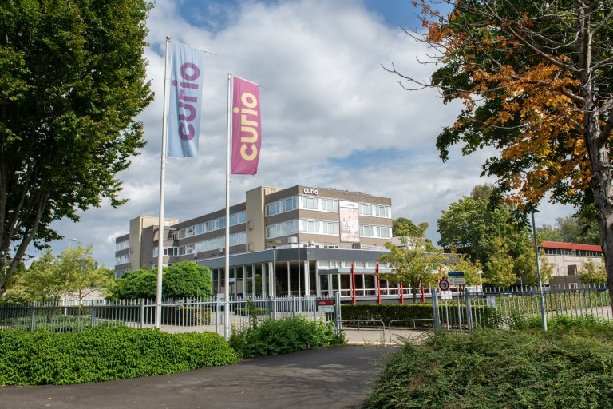
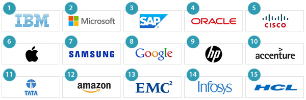
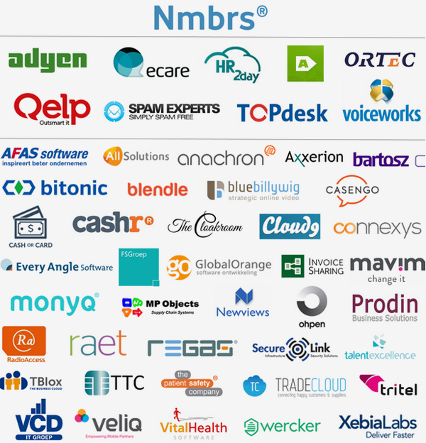
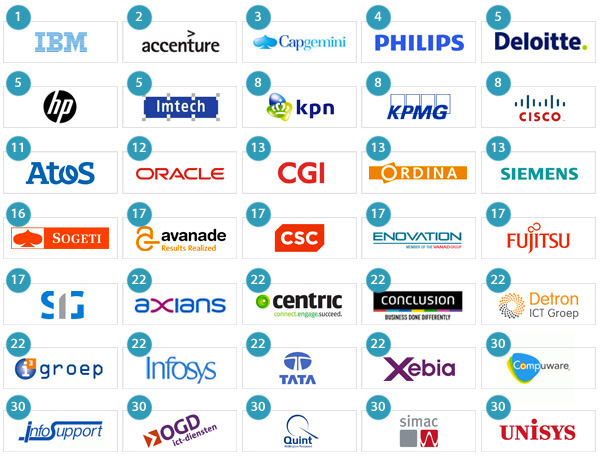

Terheijdenseweg 350

Rooster eerste leerjaar

Waar zou je heen kunnen gaan na school
Na deze opleiding zou je hierma aan de slag kunnen gaan:
ICT bedrijven -

Bij een IT-bedrijf ontwerp, ontwikkel, beheer en beveilig je computersystemen, software en netwerken voor andere organisatie
Development Bureaus -
Bij een development bureau zou je software, websites en web applicaties of mobiele applicaties ontwerpen, bouwen en onderhouden voor klanten
Software developmentbedrijven -

Bij een software development bedrijf ontwerp, bouw, test en onderhoud je digitale toepassingen zoals websites, mobiele apps en bedrijfssoftware
Software consultancy ondernemingen -

Bij een software consultancy onderneming adviseer je bedrijven over technologie en help je bij het ontwerpen, bouwen en testen van software
Semicon industrie -
Bij de semicon-industrie ontwerp, maak en test microchips die de basis vormen van alle moderne elektronica, zoals smartphones, auto's en computers